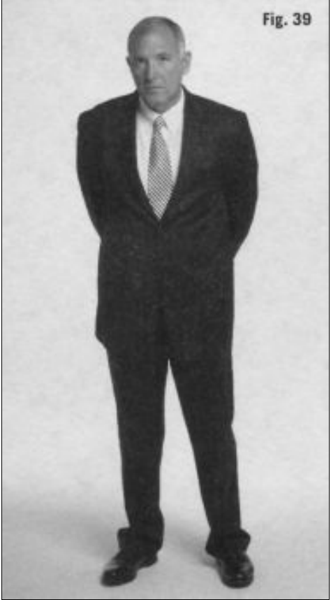
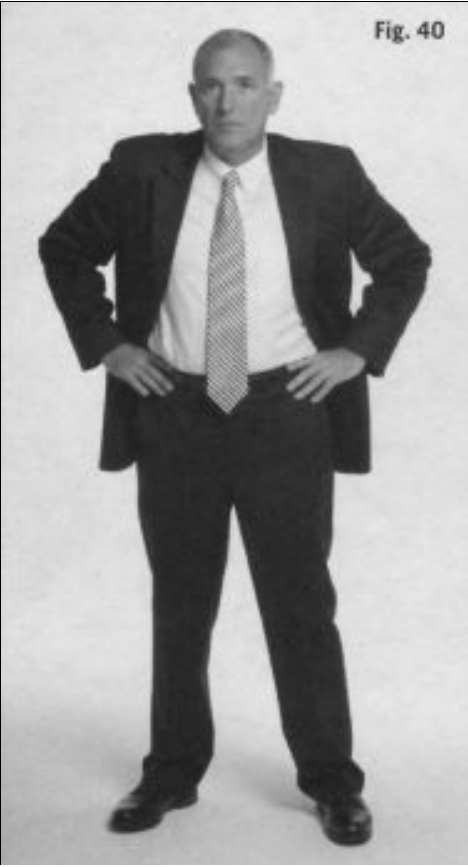
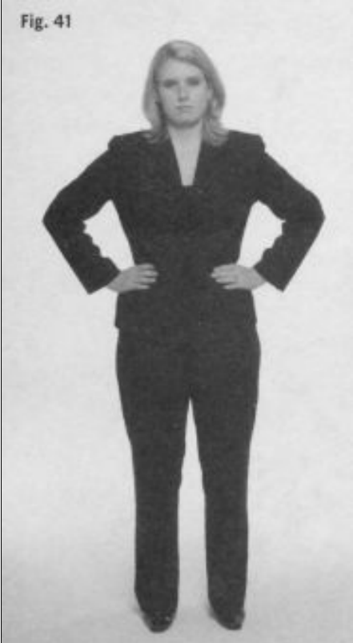
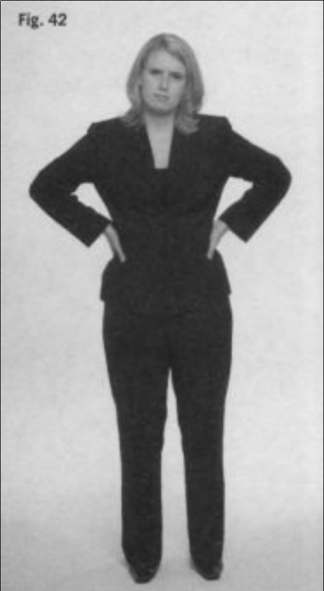
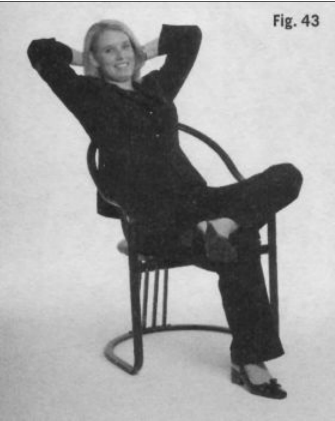
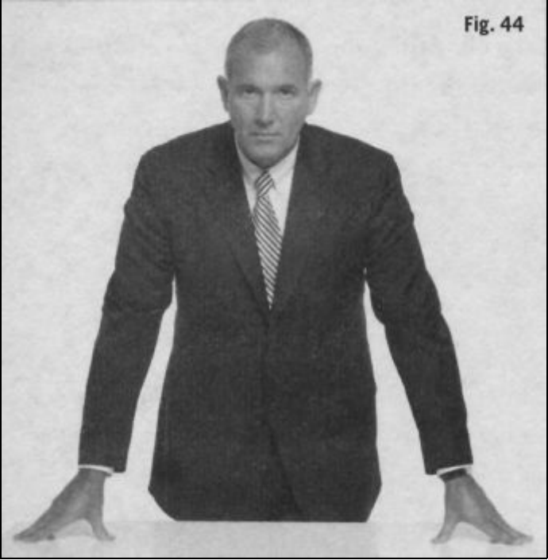
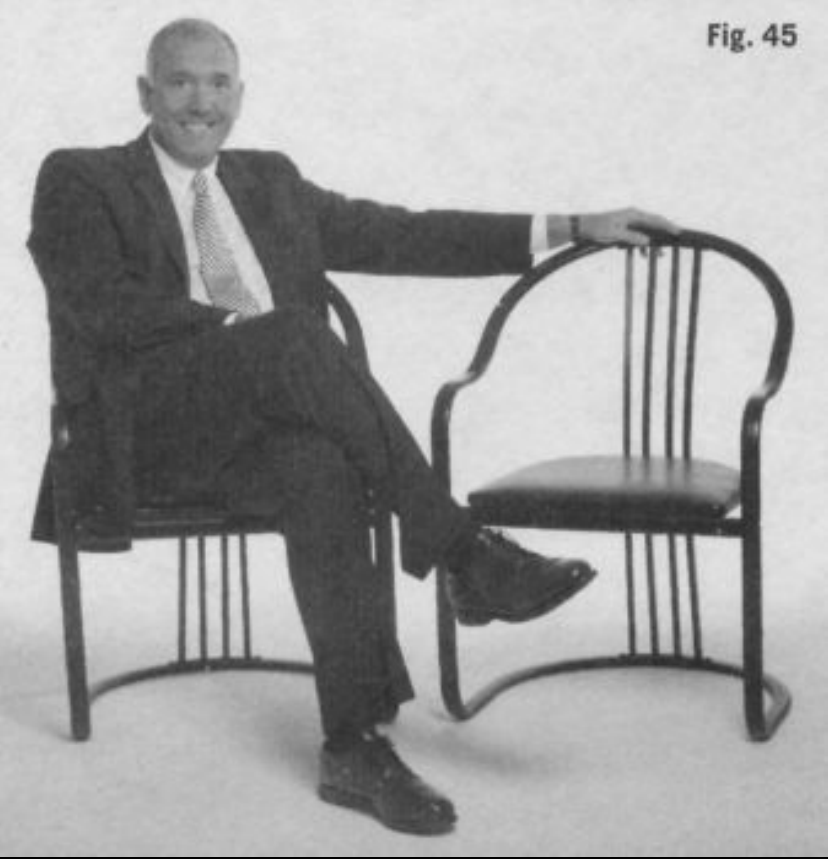

El modo de mover los brazos es un indicador preciso y significativo denuestras actitudes y sentimientos. Estos movimientos pueden ser desdecontenidos (moderados y coartados) hasta exuberantes (incontrolados ycomunicativos). Cuando estamos felices y satisfechos, nuestros brazos semueven libremente, incluso alegremente. Observa a los niños jugar. Susbrazos se mueven sin esfuerzo mientras se relacionan. Los verás señalando,gesticulando, sujetando cosas, alzándolas, abrazando y diciendo adiós con lasmanos.
Cuando nos sentimos excitados, no restringimos los movimientos denuestros brazos; de hecho, nuestra tendencia natural es desafiar la gravedad ylevantarlos por encima de la cabeza (ver recuadro 27). Cuando la gente estáverdaderamente entusiasmada y feliz, los movimientos de sus brazos desafíanla gravedad. Como ya se ha comentado anteriormente, estos comportamientosque desafían la gravedad están asociados con sentimientos positivos. Cuandouna persona se siente bien y segura, balancea los brazos con decisión, comocuando andamos. Por el contrario, el individuo inseguro restringeinconscientemente el movimiento de los brazos, aparentemente incapaz dedesafiar el peso de la gravedad.
Habla con franqueza a una compañera de trabajo sobre un grave y costosoerror que ella haya cometido en la empresa, y sus hombros y brazos sehundirán y le colgarán inertes. ¿Nunca has tenido esa «sensación de hundimiento»? Es una respuesta límbica a un suceso negativo. Las emocionesnegativas nos abaten físicamente. Estas respuestas límbicas no sólo sonsinceras, sino que también se producen instantáneamente. Saltamos yalzamos los brazos al aire en cuanto se anota un tanto, pero nuestros hombrosy brazos se hunden cuando el árbitro falla en contra de nuestro equipo. Estoscomportamientos relacionados con la gravedad comunican emociones conmucha exactitud y en el preciso instante en que las sentimos. Además, estasmanifestaciones físicas pueden ser contagiosas, ya sea en un estadio defútbol, en un concierto de rock o en una reunión de amigos.
Cuando estamos disgustados o tenemos miedo, echamos los brazos haciaatrás. De hecho, cuando estamos heridos, o nos sentimos amenazados,insultados o preocupados, nuestros brazos se van directamente a nuestroscostados o se cierran sobre el pecho. Ésta es una táctica de supervivencia quenos ayuda a protegernos cuando captamos un peligro, ya sea real o percibido.Piensa, por ejemplo, en una madre que está preocupada por su hijo cuandoéste juega con otros niños más bruscos que él. A menudo, cruza los brazos ylos dobla sobre el abdomen. Desea intervenir, pero se mantiene al margen yse contiene sujetándose los brazos, con la esperanza de que el juego sedesarrolle sin problemas.
Cuando dos personas discuten, puede que ambas adopten estecomportamiento de retirada de brazos, un gesto muy protector del cualseguramente ninguna de las partes sea consciente. Esta circunspección resultavaliosa en términos de supervivencia: se protege el cuerpo sin mostrar unaposición provocadora. En esencia, se están reprimiendo, ya que el hecho deextender los brazos podría ser interpretado como un intento de golpear y herira la otra parte, dando lugar así a una pelea.
El autocontrol no sólo puede ayudarnos a la hora de tratar a los demás, sinoque también nos reconforta cuando lo necesitamos. Por ejemplo, las heridas oel dolor en el torso y los brazos a menudo hacen que limitemos elmovimiento de estos últimos en un esfuerzo por calmarnos y tranquilizarnos.Probablemente, retiraremos los brazos hacia la región del cuerpo que nosduele. Si alguna vez has sufrido un grave trastorno intestinal, lo más probablees que te hayas llevado las manos hasta el abdomen para aliviar el dolor. Enmomentos como ése, los brazos no se mueven hacia fuera porque el sistemalímbico requiere que satisfagan necesidades más importantes.
La limitación del movimiento de los brazos, o paralización de los brazos,sobre todo cuando se produce en niños, puede tener unas implicaciones mássiniestras. Al estudiar los indicadores del maltrato infantil, he descubierto queestos niños limitan los movimientos de los brazos en presencia de los padresmaltratadores u otros depredadores. Esto tiene sentido en términos desupervivencia, ya que todos los animales, especialmente los depredadores, secentran en el movimiento. Instintivamente, los niños que sufren maltratoaprenden que cuanto más se muevan, más posibilidades tienen de que supresencia sea percibida, y, por tanto, de convertirse en el objetivo de unmaltratador. Por consiguiente, su sistema límbico se autorregulainstintivamente para asegurarse de que los brazos no atraigan la atención. Elcomportamiento de paralización de los brazos puede servir para advertir a losadultos, ya sean profesores, vecinos, parientes o amigos, que un niño podríaestar siendo víctima de maltrato (ver recuadro 28).
Quizá mi problema es que no puedo dejar de actuar como agente del FBI,pero, cuando veo a niños en un parque, no puedo evitar mirarles los brazos enbusca de cualquier moretón o herida. Por desgracia, hay muchos niñosmaltratados en el mundo, y, durante mi entrenamiento, me enseñaron abuscar signos de abandono y maltrato en niños y adultos. No sólo por micarrera como agente de la ley, sino también por mis años como padre, sé muybien qué aspecto tienen los cardenales por caídas o golpes y en qué lugaresdel cuerpo aparecen. Los producidos por maltrato no son iguales. Suubicación y su apariencia son diferentes, y un ojo entrenado puede detectarestas diferencias.
Como ya he comentado anteriormente, los humanos utilizan los brazospara defenderse; ésta es una reacción límbica previsible. Debido a que losniños usan los brazos como medio principal de defensa para proteger sucuerpo (los adultos pueden emplear objetos), un brazo que se agita a menudo es lo primero que un maltratador agarra. Los padres que agarran a sus hijoscon agresividad dejarán marcas de presión en la parte ventral (interna) de losbrazos. Si además zarandean al niño en esta posición, las marcas seránespecialmente más oscuras (a causa de la mayor presión) y tendrán la formamás grande de la mano de un adulto o la forma alargada del pulgar o de losdedos.
A pesar de que los médicos y el personal del orden público ven a diariomarcas como éstas en jóvenes víctimas o pacientes, muchos no sonconscientes de su importancia. Si aprendemos a observar a los niños condetenimiento y buscamos los signos evidentes del maltrato, podremos ayudara proteger a niños inocentes. Con esto, no trato de convertirte en un paranoiconi hacerte sospechar injustificadamente de todo; tan sólo pretendoconcienciarte. Cuanto más informados estemos los adultos sobre la apariciónde heridas defensivas y otras lesiones de maltrato en niños y cuanto más losobservemos, más seguros estarán ellos. Queremos que sean felices y queagiten los brazos con alegría, no que los repriman por miedo.
No obstante, este comportamiento limitado de los brazos no sólo se da enniños. También puede observarse en adultos por una gran variedad de razones.
Un amigo mío, inspector de aduanas en Yuma, Arizona, me dijo que, en lafrontera, siempre se fija en cómo la gente lleva su bolso de mano o su bolsacuando entra en el país. Una persona que está preocupada por el contenido desu bolso, ya sea por su valor o porque es ilegal, tiende a aferrarse con másfuerza a él, sobre todo cuando se acerca al mostrador de la aduana. Losbrazos no sólo tienden a proteger los objetos importantes, sino también esascosas que deseamos que pasen desapercibidas.
Si observas los gestos de los brazos de un individuo específico durante unperiodo de tiempo y estableces una línea base, podrás averiguar sussentimientos a través de estos movimientos. Por ejemplo, los movimientos delos brazos pueden indicar cómo se siente una persona cuando regresa a casadel trabajo. Si ha tenido un día duro o se siente abatido y triste, mantendrá losbrazos bajos a lo largo de los costados y los hombros encorvados. Provisto deeste conocimiento, podrás confortar a la persona y ayudarle a recuperarse deun día duro. En contraposición, observa a la gente que se reencuentra despuésde una larga ausencia. Alargan los brazos abiertos. El significado es claro:«Ven aquí, ¡quiero abrazarte!». Esta hermosa imagen nos recuerda a nuestrospropios padres, cuando alargaban afectuosos los brazos hacia nosotros ynosotros les respondíamos de igual modo. Nuestros brazos se estiran,desafiando la gravedad y abriendo todo nuestro cuerpo porque nuestrossentimientos son verdaderamente positivos.
¿Qué ocurre con los movimientos de brazos cuando realmente no sentimosemociones positivas? Hace años, cuando mi hija era pequeña, en una reuniónfamiliar, un pariente se me acercó y, en lugar de estirar los brazos porcompleto, sólo los alargué a partir de los codos, manteniendo pegada a loscostados la parte superior de los brazos. Fue interesante que mi hija hiciera lomismo cuando este pariente se acercó para abrazarla. Inconscientemente, yohabía transmitido que esa persona era bienvenida, pero que no estabaextremadamente entusiasmado de verla. Mi hija respondió del mismo modo yluego me comentó que a ella tampoco le gustaba esa persona. Tanto si lossentimientos de mi hija eran verdaderos como si simplemente había percibidomis sentimientos hacia ese familiar, los dos, de manera inconsciente,mostramos cómo nos sentíamos realmente al no extender del todo los brazos.
Los comportamientos de los brazos también ayudan a comunicar mensajescotidianos como «hola», «hasta luego», «ven aquí», «no lo sé», «allí», «aquíabajo», «aquí arriba», «basta», «vuelve», «sal de mi vista» o «¡no puedocreer lo que acaba de pasar!». Muchos de estos gestos pueden comprenderseen cualquier parte del mundo y, a menudo, se usan para superar barreraslingüísticas. También existen numerosos gestos obscenos en los que participan los brazos, algunos específicos de ciertas culturas y otros que secomprenden universalmente.
Ciertos comportamientos de los brazos transmiten el mensaje: «No teacerques a mí; ¡no me toques!». Observa a algunos profesores de universidad,doctores o abogados cuando caminan por un pasillo o, lo que es más, mira ala reina de Inglaterra o a su esposo, el príncipe Felipe. Cuando la gente selleva los brazos a la espalda, en primer lugar están diciendo: «Soy de unestatus más alto». En segundo lugar, están transmitiendo: «Por favor, no teacerques a mí; se supone que no debes tocarme». Este comportamiento confrecuencia se malinterpreta como una pose reflexiva o pensativa, pero, amenos que se observe en alguien que estudia un cuadro en un museo o en unaactividad similar, no lo es. El hecho de llevar los brazos a la espalda es unaclara y fría señal límbica que significa: «No te acerques; no quiero establecercontacto contigo». Los adultos pueden transmitir este mensajea otros adultos o a los niños. Incluso los animales domésticos son sensibles alos gestos de los brazos que aíslan (ver recuadro 30). Imagínate lo asoladoque debe de sentirse un niño que crece en un hogar en el que, cada vez queanhela que lo abracen, su madre retira los brazos y se los lleva a la espalda.Estos mensajes no verbales, por desgracia, tienen efectos duraderos en losniños y, con demasiada frecuencia, al igual que sucede con otras formas deabandono y maltrato, más tarde se imitan y se transmiten a la siguientegeneración.
A los humanos no nos gusta sentirnos indignos de ser tocados. Cuando lasparejas pasean juntas y uno de los dos lleva los brazos a la espalda, se estáreprimiendo. Es evidente que, con este comportamiento, no se refleja cercanía ni intimidad. Fíjate en cómo te sientes cuando alargas el brazo paraestrechar la mano a alguien y no te corresponde. Cuando buscamos elcontacto físico y no somos correspondidos, nos sentimos rechazados yabatidos.
Hay una amplia investigación científica que sugiere que el contacto es muyimportante para el bienestar de los humanos. Se dice que la salud, el estadode ánimo, el desarrollo mental e incluso la longevidad se ven influidos por lacantidad de contacto físico que tenemos con los demás y por la frecuenciacon la que se produce el contacto positivo (Knapp y Hall, 2002, 290-301).Todos hemos leído estudios en los que se afirma que el simple hecho deacariciar a un perro disminuye el ritmo cardíaco y sirve como agentecalmante. Quizá esto es así porque las mascotas, normalmente, se muestrantan incondicionales en sus afectos que no tenemos que preocuparnos de sercorrespondidos.
Como especie, hemos aprendido a usar el tacto como un barómetro sobrecómo nos sentimos. Buscamos el contacto con aquello que realmente nos gusta y mantenemos lo desagradable a distancia. Si entregas a alguien unpañal sucio para que lo tire, fíjate en que la reacción inmediata es tomarlo conel mínimo de dedos posible y mantener el brazo alejado del cuerpo. Nadierecibe entrenamiento en este tipo de cosas; sin embargo, todos lo hacemos,porque el cerebro límbico limita el contacto con objetos desagradables, pocosaludables o peligrosos para nosotros.
Este fenómeno de distanciamiento del brazo no sólo ocurre cuando nosencontramos con objetos que no nos gustan, sino también cuando estamoscon gente que no nos cae bien. Nuestros brazos actuarán como barreras omecanismos de bloqueo para protegernos o distanciarnos de amenazas o decualquier cosa que consideremos negativa en nuestro entorno. Puedesaprender mucho sobre cómo se siente un individuo respecto a alguien o algofijándote en si el brazo se acerca o se distancia del individuo o del objeto encuestión. Observa a la gente en el aeropuerto o en una acera abarrotada yfíjate en cómo usan los brazos para protegerse o bloquear a los demás y paraevitar que se acerquen demasiado mientras se abren paso entre la multitud.Luego, fíjate en cómo la gente con la que tú interactúas te saluda ensituaciones sociales y de negocios. Creo que empezarás a observar que eldicho de «mantener las distancias con alguien» tiene un verdaderosignificado y unas consecuencias prácticas.
BRAZOSAdemás de usar nuestros brazos para protegernos o para mantener a lagente alejada, también pueden emplearse para marcar territorio. De hecho,mientras escribo este párrafo, me encuentro en un vuelo de Air Canada condestino Calgary y mi enorme compañero de asiento y yo hemos estadodisputándonos el territorio del reposabrazos prácticamente durante todo elvuelo. En este momento, parece que yo voy perdiendo; dispongo de unpequeño rincón del reposabrazos, mientras que él domina el resto y, por lotanto, todo mi lado izquierdo. Ahora, lo único que puedo hacer es apoyarmeen la ventana. Al final, he decidido rendirme y dejar de intentar hacerme conmás territorio, así que él ha ganado y yo he perdido. Pero, al menos, helogrado un ejemplo sobre este tipo de manifestación territorial para el libro.Incidentes como éste nos ocurren a todos a diario en ascensores, entradas oaulas. Al final, si no hay acuerdo ni compromiso, alguien acaba siendo el«perdedor» y a nadie le gusta sentirse como tal.
También se ven manifestaciones territoriales en salas de juntas o dereuniones, donde una persona esparcirá su material y usará los codos paradominar un espacio considerable de la mesa de conferencias a costa de losdemás. Según Edward Hall, el territorio, en esencia, es poder (Hall, 1969;Knapp y Hall, 2002, 158-164). El hecho de reclamar territorio puede tenerunas consecuencias muy potentes y negativas, tanto efímeras comoduraderas, y las batallas resultantes pueden ir de pequeñas a grandes. Lasdisputas territoriales abarcan todo tipo de ámbitos, desde un tema de espacioen un metro abarrotado hasta la guerra entre Argentina y Gran Bretaña por las slas Malvinas (Knapp y Hall, 2002, 157-159). Ahora, meses después deaquel vuelo a Calgary, estoy aquí sentado y, mientras corrijo este capítulo,aún puedo sentir el malestar que experimenté cuando mi compañero deasiento acaparó el reposabrazos. Claramente, las muestras territoriales sonimportantes para nosotros y nuestros brazos ayudan a reafirmar nuestrodominio sobre las personas con las que coincidimos en el espacio.
Fíjate en cómo los individuos seguros de sí mismos o de alto estatusreclamarán más territorio con los brazos que la gente menos segura o deestatus más bajo. Un hombre dominante, por ejemplo, rodeará una silla con elbrazo para hacer saber a todos que ése es su dominio o, en una primera cita,hará lo propio con el hombro de una mujer como si fuera de su propiedad.Además, en referencia a los «modales en la mesa», ten en cuenta que laspersonas con un nivel más alto normalmente reclamarán tanto territorio comosea posible en cuanto se sienten, extendiendo los brazos o sus objetospersonales (maletín, bolso, papeles...) sobre la mesa. Si eres nuevo en unaorganización, trata de identificar a aquellos individuos que usan su materialpersonal (blocs de notas, agendas...) o sus brazos para reclamar una mayorparcela de propiedad que la mayoría. Incluso en la mesa de conferencias, lapropiedad se equipara con el poder y el estatus; de modo que tienes quefijarte en este comportamiento no verbal para evaluar la posición real opercibida de un individuo. Por otra parte, la persona que se sienta a la mesade conferencias con los codos pegados a la cintura y los brazos entre laspiernas transmite un mensaje de debilidad y poca confianza.
El gesto conocido como brazos en jarras es un comportamiento territorialusado para reafirmar el dominio y proyectar una imagen de autoridad. En este comportamiento no verbal, la persona en cuestión extiende ambos brazos,formando una V con cada uno, y apoya las manos (pulgares hacia atrás) enlas caderas. Observa a los agentes de policía o a los militares uniformadoscuando hablan entre sí. Casi siempre adoptan la postura de los brazos enjarras. Aunque este gesto forma parte de su entrenamiento disciplinario, noqueda bien en el sector privado. Un buen consejo para el personal militar quedeja el servicio para entrar en el mundo de los negocios es que suavice esaimagen a fin de no dar una impresión tan autoritaria. El simplehecho de minimizar el gesto de los brazos en jarras a menudo mejora eseporte militar que los civiles con frecuencia encuentran desconcertante.
Para las mujeres, el gesto de los brazos en jarras puede tener una utilidadparticular. He enseñado a varias ejecutivas que es una muestra no verbalpoderosa que pueden emplear cuando se tienen que enfrentar a hombres en lasala de juntas. Se trata de una forma eficaz para que cualquiera,especialmente una mujer, demuestre que se mantiene firme, segura y no estádispuesta a que la intimiden. Con demasiada frecuencia, las mujeres jóvenesse ven intimidadas no verbalmente en el lugar de trabajo por hombres queinsisten en hablar con ellas con los brazos en jarras en una muestra dedominio territorial. Imitar este comportamiento, o usarloprimero, puede servir para igualar el campo de juego a aquellas mujeres a lasque les cuesta mostrarse autoritarias de otros modos. Los brazos en jarras sonuna buena manera de decir «hay problemas», «las cosas no van bien» o «voya mantenerme firme» en una manifestación territorial (Morris, 1985, 195).
Existe una variante de la tradicional pose de los brazos en jarras (quenormalmente se realiza apoyando las manos en las caderas con los pulgareshacia atrás) en la que las manos se colocan sobre las caderas, pero lospulgares apuntan hacia delante. A menudo se ve cuando la gente se muestra muy curiosa, aunque preocupada. Probablementeabordarán una situación con esta pose curiosa de los brazos en jarras(pulgares hacia delante, manos en las caderas, codos hacia fuera) para evaluarqué ocurre y luego girarán las manos con los «pulgares hacia atrás» paraestablecer una postura más dominante de preocupación si es necesario.
Otra manifestación territorial, similar a la de los brazos en jarras, puedeverse a menudo en las reuniones de negocios y otros encuentros sociales enlos que los participantes están sentados y, de repente, una persona se reclina yune las manos por detrás de la cabeza. Hablé con unantropólogo cultural sobre este comportamiento, y los dos concluimos quenos recuerda al modo en que una cobra despliega su «capucha» para alertar alos otros animales de su dominio y poder. Este efecto capucha nos da unaspecto imponente y dice a los demás: «Aquí mando yo». También existe unajerarquía para esta y otras manifestaciones de dominio. Por ejemplo, mientrasse espera a que empiece una reunión, el supervisor de la oficina puedeadoptar esta pose con las manos detrás de la cabeza y los codos hacia fuera. Sin embargo, cuando el jefe entra en la sala, esta actitud cesará. Lareclamación de territorio es para aquellos de estatus alto o que están almando. Por lo tanto, es el jefe quien tiene derecho a asumir estecomportamiento, mientras se espera que todos los demás mantengan lasmanos bajo la mesa en una adecuada muestra de deferencia.
A menudo, las personas usan los brazos para enfatizar un punto y reclamarterritorio simultáneamente. Esto sucede con frecuencia durante interaccionesen las que los participantes no están de acuerdo en algún tema. Recuerdo unincidente reciente en Nueva York, en el que el huésped de un hotel se acercóal mostrador principal con los brazos pegados a los costados y preguntó alrecepcionista si podía hacerle un favor. Cuando el empleado se negó, elhuésped convirtió su petición en una exigencia y también cambió la posiciónde los brazos. Los fue separando cada vez más, reclamando así cada vez másterritorio a medida que la conversación se volvía más acalorada. Estecomportamiento de los brazos extendidos es una potente respuesta límbicaempleada para marcar el dominio y recalcar un punto de vista. Generalmente, las personas dóciles encogerán los brazos; las fuertes,poderosas o indignadas los extenderán para reclamar más territorio (verrecuadro 32).
En las reuniones de negocios, un orador que marca (y mantiene) un amplioterritorio probablemente se siente muy seguro sobre lo que se discute. Los brazos extendidos son uno de esos gestos no verbales de granprecisión, porque tiene un origen límbico y afirma: «Estoy seguro de mímismo». En cambio, fíjate en lo rápido que encoge los brazos alguien que los tiene estirados cuando se le pregunta algo que le haga sentirse incómodo (verrecuadro 33).
En el cortejo, a menudo el hombre es el primero en rodear a su cita con elbrazo, sobre todo cuando existe la posibilidad de que otros hombres intentenrobarle a su mujer. O plantará un brazo por detrás de su pareja y girará a sualrededor de forma que nadie pueda reclamar o invadir su territorio. Observarlos rituales del cortejo puede ser muy ilustrativo y ameno, especialmentecuando ves a los hombres pendientes de su territorio y de su cita, todo almismo tiempo.
Otro ejemplo de comportamientos de cortejo con los brazos es lo cerca quelos miembros de una pareja pondrán (o no pondrán) los brazos cuando estánsentados juntos a la mesa. Hay una gran cantidad de receptores sensoriales enestas extremidades, por lo que el contacto en ellos puede generar placersensual. De hecho, incluso el roce del vello de nuestros brazos desnudos o unligero contacto a través de la ropa pueden estimular ciertas terminacionesnerviosas. Así que, cuando colocamos nuestros brazos cerca de los de otrapersona, el cerebro límbico está demostrando abiertamente que estamos tancómodos que el contacto físico es permisible. La otra cara de la moneda deeste comportamiento es apartar los brazos para alejarlos de los de nuestroacompañante cuando la relación se está deteriorando o cuando el individuocon el que estamos sentados (ya sea una cita o un desconocido) nos estáhaciendo sentir incómodos.
Por todo el mundo, la riqueza a menudo se demuestra llevando objetos oadornos valiosos en los brazos. En muchas partes de Oriente Medio, aún escomún que las mujeres luzcan su riqueza en forma de anillos de oro opulseras en los brazos, indicando así su valía y estatus. Los hombres tambiénlucen relojes caros para demostrar su posición socioeconómica o su nivel deriqueza. En los años ochenta, los hombres en Miami estaban obsesionadospor llevar relojes Rolex; eran el símbolo del estatus por excelencia y eranomnipresentes tanto entre los traficantes de drogas como entre los nuevosricos.
En los brazos se pueden también exhibir otros emblemas sociales, comomuestras de nuestra historia personal o nuestro trabajo. La gente que trabajaen la construcción, los atletas y los soldados, a veces, muestran las cicatricesde su profesión. Algunos uniformes llevan emblemas en la parte superior delos brazos. Al igual que el torso, los brazos pueden ser vallas publicitariasque proclaman aspectos de nuestra personalidad. Simplemente, fíjate en lavariedad de tatuajes con los que la gente se los adorna, o los músculos que losculturistas muestran orgullosamente con esas ajustadas camisetas de tirantes.
Para el observador experimentado, un cuidadoso escrutinio de los brazosde la gente puede revelar información sobre su estilo de vida. Los suaves ybien cuidados codos de las personas que llevan una vida fácil no tienen nadaque ver con los que están marcados o bronceados por el trabajo diario a laintemperie. Quien ha estado en el ejército o en prisión con muchaprobabilidad lucirá muestras de sus experiencias en los brazos, comocicatrices y tatuajes. Los individuos que muestran odio hacia cierto grupo otema, a menudo, se harán tatuar una evidencia de ese odio en los brazos,mientras que aquellos que consumen drogas intravenosas seguramentetendrán marcas en las venas. Asimismo, los individuos que padecen eltrastorno psicológico conocido como trastorno límite de la personalidadpueden tener cortes o cuchilladas en los brazos producidos por ellos mismos(American Psychological Association, 2000, 706-707).
Específicamente sobre los tatuajes, hay que decir que este tipo deornamentación corporal ha aumentado en los últimos quince años, sobre todoen los países más «modernizados». Sin embargo, este método de decoraciónpersonal se ha venido usando en todo el mundo durante al menos trece milaños. Como parte de nuestra «valla publicitaria corporal», el mensaje que lostatuajes transmiten en la cultura actual debería tenerse en cuenta. En relacióncon el aumento relativamente creciente de su uso, participé en el proceso de evaluación de miembros potenciales de jurados para averiguar cómopercibirían éstos a un testigo o acusado si llevara tatuajes. Repetidos estudiosrealizados con varios grupos de hombres y mujeres concluyeron que losmiembros de jurados percibían los tatuajes como adornos de bajo estatus(clase baja) o vestigios de la indiscreción juvenil y que, en general, no lesgustaban mucho.
Yo les digo a los estudiantes que, si llevan tatuajes, deberían ocultarlos,sobre todo cuando se presenten a una entrevista de trabajo, y especialmente sivan a trabajar en la industria alimentaria o en la profesión médica. Puede quelas celebridades no tengan problemas con los tatuajes, pero incluso ellas selos tapan cuando trabajan. El balance final en el tema de los tatuajes es quelos estudios muestran que a la mayor parte de la gente no le gusta verlos.Aunque puede que esto cambie algún día, por el momento, si intentas influiren los demás de un modo positivo, deberías ocultarlos.
Los niños necesitan que los toquen con cariño para que puedan crecersintiéndose seguros y queridos, pero incluso a los adultos les va bien un buenabrazo de vez en cuando. Yo no tengo ningún reparo en dar abrazos, porquetransmiten cariño y afecto de un modo más eficaz que las simples palabras.Aquellos que no abrazan me dan pena porque se están perdiendo muchascosas en la vida.
Por muy poderoso y eficaz que pueda ser un abrazo a la hora de ganarse elfavor de los demás y lograr una efectividad interpersonal con ellos, tambiénes un gesto que puede ser considerado por algunos como una intrusión nodeseada en su espacio personal. En la litigiosa época en la que vivimos, en laque un abrazo bienintencionado puede malinterpretarse como un avance sexual, uno debe tener cuidado y no dar abrazos donde no sean bienrecibidos. Como siempre, una observación cuidadosa y la interpretación delcomportamiento de la gente cuando te relacionas con ella será tu mejorindicador de si es apropiado o no un abrazo en una circunstancia dada.
No obstante, incluso sin llegar a dar un abrazo, la gente puede usar losbrazos para mostrar cordialidad y, de este modo, aumentar las posibilidadesde ser visto de un modo favorable por los demás. Cuando te acerques aalguien por primera vez, intenta mostrarte cordial dejando los brazosrelajados, preferiblemente con la parte ventral expuesta e, incluso, tal vez conlas palmas de las manos claramente visibles. Ésta es una forma muy potentede enviar el mensaje: «Hola, no quiero hacerte daño» al sistema límbico de laotra persona. Es un modo estupendo de hacer que se sienta cómoda y defacilitar cualquier interacción subsiguiente.
En Latinoamérica, el abrazo forma parte de la cultura entre los hombres. Esun modo de decir: «Me caes bien». Cuando se da este abrazo, los pechos seunen y los brazos rodean la espalda del otro. Por desgracia, conozco a muchagente que es reacia a hacer esto o que se siente muy incómoda cuando lohace. He visto a hombres de negocios estadounidenses en Latinoamérica queo bien se niegan a dar un abrazo o, cuando lo hacen, parece como siestuvieran bailando con su abuela. Mi consejo es hacerlo y hacerlo bien,porque las pequeñas cortesías significan mucho en cualquier cultura.Aprender a dar un abrazo como es debido no es diferente a aprender aestrechar la mano correctamente y sentirse cómodo haciéndolo. Si eres unhombre de negocios y vas a trabajar en Latinoamérica, te considerarán unapersona fría o distante si no consigues aprender este familiar saludo. Pero nohay necesidad de que eso suceda cuando un simple gesto puede engendrartanta buena voluntad y convertirte en alguien aceptado y agradable (verrecuadro 34).
Nuestros brazos pueden transmitir mucha información a la hora dedescifrar las intenciones y los sentimientos de los demás. Desde miperspectiva, una de las mejores formas de establecer una relación con alguienes tocar a esa persona en el brazo, en algún lugar entre el codo y el hombro.Por supuesto, siempre es prudente valorar sus preferencias culturales ypersonales antes de actuar. Generalmente, sin embargo, ese breve gesto esuna buena forma de iniciar el contacto y de hacer saber a los demás que todova bien entre vosotros. En los países mediterráneos, latinoamérica y el mundoárabe, el contacto físico es un importante componente de la comunicación yde la armonía social. Nadie debe horrorizarse, sorprenderse ni sentirseamenazado cuando viaja si la gente le toca el brazo (suponiendo que lo hagande un modo apropiado, como ya he descrito). Es su potente forma de decir:«Estamos bien». De hecho, debido a que el contacto humano está taníntimamente unido a la comunicación, cuando no observes contacto entre lagente, deberías preocuparte por ello o preguntarte la razón.